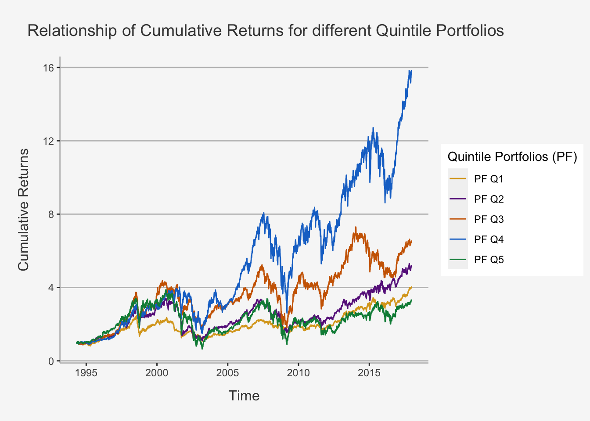
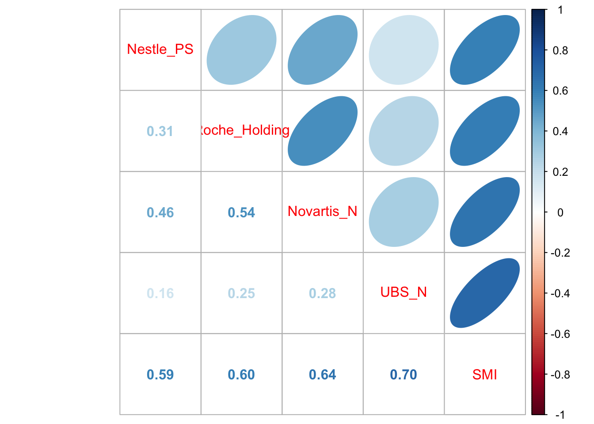
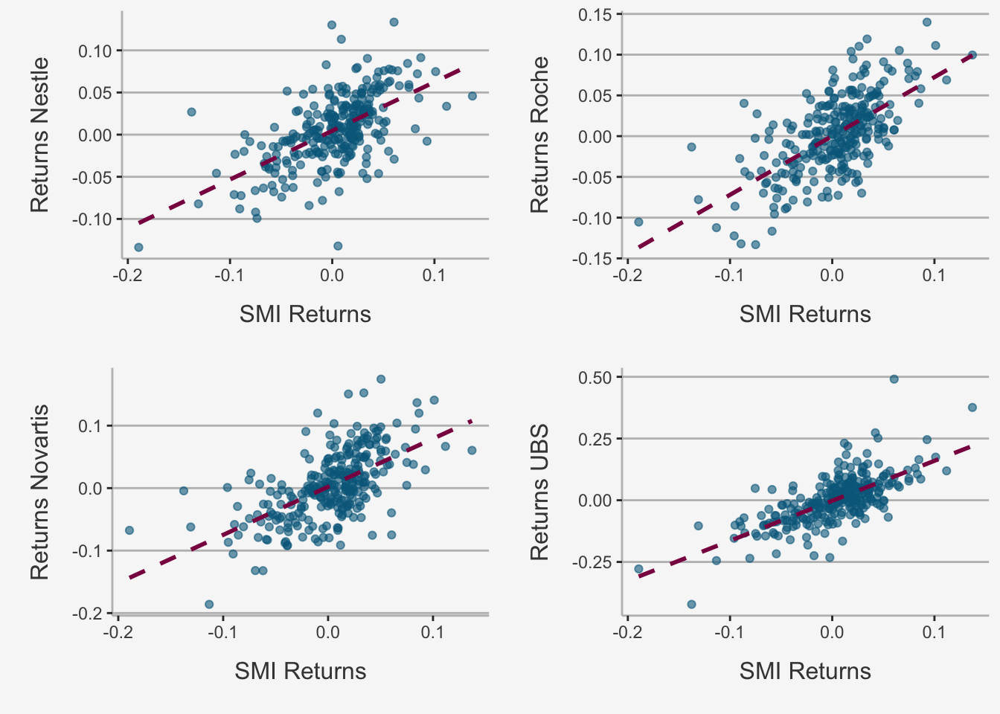

Chapter 4 Beta
4.1 Application of Regression Analysis: \(\beta\) analysis in Financial Market Settings
We now covered the theoretical fundamentals of both the statistical and algebraic properties and defined a method to apply these properties into a coherent cause-and-effect analysis. We also understand the idea of co-movements and variation within a this framework and can depict how to account for the pure covariation of two variables within a multi-dimensional setting. Lastly, we do understand the sample properties of the estimators at hand and derive how to check for both the assumptions made within the regression settings as well as the model fit. Now, we are eager to apply our knowledge within a financial domain.
In essence, we understand that the term \(\beta\), in statistics, is simply the coefficient of an explanatory variable \(x_i\) within a regression setting. It states the average change in the dependent variable when, keeping all other variables constant, the explanatory variable changes by one unit, whereas unit is a measurement indicator (such as percentage points, price in dollars, years etc.). This holds true for many applications within financial econometric settings, which combines financial and economic theory with statistical quantification. However, within financial economics, we usually think of \(\beta\) in terms of the sensitivity of the security return relative to variations in the market return. Most famously, we associate \(\beta\) with the following formula:
\[ \hat{\beta} = \frac{cov(r_i,r_m)}{var(r_m)} \]
Mathematically speaking, in financial economics, we usually define \(\beta\) as the covariance of the individual security return with the market return relative to the variance of the market return (= the covariance of the market return with itself). We can see that this is solely a specification of the general \(\beta\) factor that associates co-movements of any dependent and explanatory variable with the variation of the explanatory variable itself. Within the general OLS setting, we simply defined the former as \(x_i\) and the latter as \(y_i\). As such, the general regression coefficient states nothing else than the variation of a variable based on the relational variation with a different variable. In the case of financial economics, we derive from economic theory that a covariation between individual returns and underlying market returns may be likely. However, from an econometric point of view, this is identical to the derivation of the general regression coefficient within a simple OLS framework.
Consequently, the method of finding a \(\beta\) factor that explains security returns is coherent with the general regression framework technique. In this chapter, we start exploring how researchers came to this result, what it implies and whether it actually reflects market settings. Further, we obtain a more econometric setting and want to understand how we can use econometric functions through regression techniques based on financial economic relationships in R.
4.1.1 The Single Index Model
The relationship portrayed above is the key factor of one of the most fundamental asset pricing models: The Single-Index Model. The Single-Index model (SIM) is a simple asset pricing model to measure both the risk and the return of a stock as well as their interconnections. The model has been developed by William Sharpe in 1963. In essence, it assumes that variations of individual securities are linearly related to variations of a common underlying market structure, or factor. In this case, market structure is defined as an index to which the security belongs.
The SIM thus builds on the previous notions of risk we encountered when assessing the security variance as tool to measure risk. Remember, in Chapter 4.4.4 as well as in the Linear Algebra repetition we have shown that the portfolio variance in the general case of N (not perfectly correlated) assets is:
\[ var(w'\textbf{R}) = \frac{1}{n}\bar{\sigma}^2_i + (1-\frac{1}{n})\bar{\sigma}_{ij} \] That is, the risk of a portfolio depends on both the variation of the individual securities as well as their covariation with the underlying assets. In general notion, these two terms are the Idiosyncratic as well as the Systematic part of portfolio risk. As we showed, the variance of a portfolio decreases with an increasing amount of imperfectly correlated assets. This process, known as diversification, cancels out the idiosyncratic part of risk, leaving only the systematic part of risk left within a portfolio. As such, each well-diversified portfolio solely depends on the covariation between the underlying assets. In order to measure said systematic risk component, we need to capture the common components of the covariation properties of the underlying assets. In essence, we need to quantify a common component on which the set of security returns jointly depends and which captures the required compensation to risk within a portfolio setting.
In order to do so, the SIM explains the covariance and correlation structure among asset returns as resulting from common exposures to an underlying market index. That is, it quantifies the security’s risk as its covariation properties relative to the underlying, common variation of a market factor. In other words, it measures risk by the co-movements of a security and market return relative to the variation of the underlying market. This relative co-dependence to a common factor is measured by the \(\beta\) factor we have encountered before.
4.1.1.1 Assessing the co-dependence of security returns and a common factor
To understand the intuition behind the SIM, we make use of the co-dependence of the security returns to a common, underlying factor. To see why we hypothesize this relationship, let’s look at the prices and returns of the Big Four companies and a common index, the Swiss Market Index (SM)
# Read in the datasets
stocks <- read.csv("~/Desktop/Master UZH/Data/A2_dataset_01_Ex_Session.txt", header = T, sep = "\t")
SMI <- read.csv("~/Desktop/Master UZH/Data/A2_dataset_03_Ex_Session.txt", header = T, sep = "\t")
rf <- read.csv("~/Desktop/Master UZH/Data/A2_dataset_02_Ex_Session.txt", header = T, sep = "\t")
# Select only the columns of interest
stocks <- stocks %>%
select(c(Date, Nestle_PS, Roche_Holding, Novartis_N, UBS_N)) %>%
filter(Date > "1997-08-29")
SMI <- SMI %>%
select(c(Date, SMI)) %>%
filter(Date > "1997-08-29")
# Bind both together
stocks_SMI <- cbind(stocks, SMI)
stocks_SMI <- subset(stocks_SMI[, -6])
# Transform all into xts objects
stocks_SMI_ts <- xts(stocks_SMI[,-1], order.by = as.Date(stocks_SMI[,1]))
stocks_SMI_ts_ret <- Return.calculate(stocks_SMI_ts, method = "discrete")[-1,]First, let’s look at the returns of the companies and index
tidy(stocks_SMI_ts_ret) %>% ggplot(aes(x=index,y= value, color=series)) + geom_line() +
ylab("Returns") + xlab("Time") + ggtitle("Return of the Big Four and SMI from 1988 to 2000") +
labs(color='Cumulative Return') +
theme(plot.title= element_text(size=14, color="grey26",
hjust=0.3,lineheight=2.4, margin=margin(15,0,15,45)),
panel.background = element_rect(fill="#f7f7f7"),
panel.grid.major.y = element_line(size = 0.5, linetype = "solid", color = "grey"),
panel.grid.minor = element_blank(),
panel.grid.major.x = element_blank(),
plot.background = element_rect(fill="#f7f7f7", color = "#f7f7f7"),
axis.title.y = element_text(color="grey26", size=12, margin=margin(0,10,0,10)),
axis.title.x = element_text(color="grey26", size=12, margin=margin(10,0,10,0)),
axis.line = element_line(color = "grey")) 
The time plots of returns show some common movements among the stocks that are similar to movements of the SMI. The figure shows further that individual stock returns are more volatile than the SMI returns, and that the movement in stock returns tends to follow the movements in the SMI returns indicating positive covariance and correlations.
Let’s examine this more thoroughly.
# Calculate and display the codependence structure
vcov_bigfour_smi <- cov(stocks_SMI_ts_ret)
corr_bigfour_smi <- cov2cor(vcov_bigfour_smi)
corrplot.mixed(corr_bigfour_smi, upper="ellipse")
All returns are positively correlated and each stock return has the highest positive correlation with the SMI.
Further, we can plot the relation between both the individual security return and the SMI and assess to what extent it is linear.
# Define a list with names of the companies
names = list("Nestle", "Novartis", "Roche", "UBS")
# Redefine a data frame
stocks_SMI_df_ret <- data.frame(stocks_SMI_ts_ret)
colnames(stocks_SMI_df_ret) <- c("Nestle", "Novartis", "Roche", "UBS", "SMI")
# Create another for loop to plot multiple relationships
for (i in 1:(ncol(stocks_SMI_df_ret)-1)){
assign(paste("figure_", names[i], sep = ""),
stocks_SMI_df_ret %>%
ggplot(aes_string(x = "SMI", y = names[[i]])) +
geom_point(width = 0.2, alpha = 0.6, color = "deepskyblue4") +
geom_smooth(method = "lm", se = F, col = "deeppink4", linetype = "dashed") +
ylab(paste("Returns", names[i], sep = " ")) + xlab("SMI Returns") +
# Title string
# ggtitle("Relationship of SMI and Big Four Company Return") +
labs(color='Factor Portfolios') +
theme(
# Title Elements
plot.title= element_text(size=14, color="grey26", hjust=0.3,lineheight=0.4, margin=margin(15,0,15,0)),
axis.title.y = element_text(color="grey26", size=12, margin=margin(0,10,0,10)),
axis.title.x = element_text(color="grey26", size=12, margin=margin(10,0,10,0)),
# Background colour and fill
panel.background = element_rect(fill="#f7f7f7"),
plot.background = element_rect(fill="#f7f7f7", color = "#f7f7f7"),
# Major Panel Grids
panel.grid.major.x = element_blank(),
panel.grid.major.y = element_line(size = 0.5, linetype = "solid", color = "grey"),
# Minor Panel Grids
panel.grid.minor.x = element_blank(),
panel.grid.minor.y = element_blank(),
# Line colour of the x and y axis
axis.line = element_line(color = "grey")))
}
# Take them together in a multi-plot
Rmisc::multiplot(figure_Nestle, figure_Novartis, figure_Roche, figure_UBS, cols = 2) 
The scatterplots show that as the market return increases, the returns on each stock increase in a linear way.
4.1.1.3 Economic Interpretation of the variables
First, let’s look at \(\beta_i\). It represents the slope coefficient in the linear relationship between \(R_{it}\) and \(R_{mt}\). It is written as the partial derivative of the SIM w.r.t. the Market Index Return:
\[ \frac{\delta SIM}{\delta R_{mt}} = \beta_i \]
That, is \(\beta_i\) is the average effect on the security return, \(R_{it}\), when the market return, \(R_{mt}\), changes by one unit. The larger (smaller) \(\beta_i\), the more extreme (less extreme) is the variation of asset i relative to the variation of the market return.
Further, we regard the coefficient in terms of portfolio risk budgeting. Given the formula for \(\hat{\beta}\), the covariance is a relative quantity proportional to the overall variation of the underlying index. Consequently, \(\hat{\beta}\) is proportional to the marginal volatility contribution of asset i to the volatility of the market portfolio. Therefore, assets with large (small) values of \(\hat{\beta}\) contribute more (less) heavily to the overall volatility of the market portfolio. From this point of view, the coefficient of the SIM can be interpreted as measure of portfolio risk. More allocations to assets with high (low) values will increase (decrease) portfolio risk (as measured by portfolio volatility) due to the relative volatility principle.
The derivation of the coefficient is rather straightforward and displays clearly the covariation properties:
\[ \begin{align} cov(R_{it}, R_{mt}) &= cov(\alpha_i + \beta_iR_{mt} + \epsilon_{it}, R_{mt}) \\ &= \underbrace{cov(\alpha_i, R_{mt})}_{=0} + \beta_i\underbrace{ cov(R_{mt}, R_{mt})}_{=var(R_{mt})} + \underbrace{cov(\epsilon_{it}, R_{mt})}_{=0} \\ &\rightarrow \beta_i = \frac{cov(R_{it}, R_{mt})}{var(R_{mt})} \end{align} \]
In addition, we can think of \(R_{mt}\) as capturing “market-wide” news at time t that is common to all assets and \(\beta_i\) captures the sensitivity or exposure of asset i to this market-wide news. Further, we can think of \(\epsilon_{it}\) as capturing specific news to asset i that is unrelated to market news or to specific news to any other asset j. Lastly, \(\alpha_i\) can be interpreted as the expected return if the expected market return is exactly zero.
Consequently, we see that:
- \(\epsilon_{it}\): part of the return independent of the index
- \(\beta_iR_{mt}\): part of the return due to index fluctuations
4.1.1.4 Statistical Properties of the SIM
Single-Asset properties
The following statistical properties hold for the SIM:
\[ \begin{align} E[R_{it}] &= \alpha_i + \beta_iR_{mt}\\ var[R_{it}] &= \beta_i^2var(R_{mt}^2) + \sigma_{\epsilon,i}^2 \\ cov[R_{it}, R_{jt}] &= \beta_i\beta_j\sigma_m^2 \end{align} \]
Looking more thoroughly at the overall security variance, we see that it consists of two parts:
\[ var[R_{it}] = \underbrace{\beta_i^2\sigma_{m}^2}_{\text{market variance (sytematic part)}} + \underbrace{\sigma_{\epsilon,i}^2}_{\text{asset specific variance (unique part)}} \]
Portfolio properties
A nice feature of the SI model for asset returns is that it also holds for a portfolio of asset returns. This property follows because asset returns are a linear function of the market return. To illustrate this, let’s look at a portfolio with two assets:
\[ \begin{align} R_{1t} &= \alpha_1 + \beta_1R_{mt} + \epsilon_{1t} \\ R_{2t} &= \alpha_2 + \beta_2R_{mt} + \epsilon_{2t} \end{align} \]
Then, the portfolio return with weights \(x_1\) and \(x_2\) is:
\[ \begin{align} R_{pt} &= x_1(\alpha_1 + \beta_1R_{mt} + \epsilon_{1t}) + x_2(R_{2t} + \alpha_2 + \beta_2R_{mt} + \epsilon_{2t}) \\ &= (x_1\alpha_1)x_2\alpha_2) + (x_1\beta_1 + x_2\beta_2)R_{mt} + (x_1\epsilon_{1t} + x_2\epsilon_{2t}) \\ &= \alpha_{p} + \beta_pR_{mt} + \epsilon_{p,t} \end{align} \] whereas \(\alpha_{p} = (x_1\alpha_1)x_2\alpha_2)\), \(\beta_p = (x_1\beta_1 + x_2\beta_2)\) and \(\epsilon_{p,t} = (x_1\epsilon_{1t} + x_2\epsilon_{2t})\). Consequently, we see that the portfolio returns follow the same linear dependence as the single asset model returns.
If we increase this to N assets, we obtain the following expected return:
\[ \begin{align} E[r_{it}] &= \sum_{i=1}^nx_iR_{it} \\ &= \sum_{i=1}^n x_i(\alpha_i + \beta_iR_{mt} + \epsilon_{it})\\ &= \frac{1}{n}\sum_{i=1}^n \alpha_i + R_{mt}\frac{1}{n}\sum_{i=1}^n\beta_i + \frac{1}{n}\sum_{i=1}^n \epsilon_{it} \\ &= \bar{\alpha} + \bar{\beta}R_{mt} + \bar{\epsilon_t} \end{align} \]
Which implies the return of the portfolio depends on the
- sensitivity of the portfolio to the market, given by \(\frac{1}{n}\sum_{i=1}^n\beta_i\)
- sensitivity to a non-market component, given by \(\frac{1}{n}\sum_{i=1}^n \alpha_i\)
- error component, given by \(\frac{1}{n}\sum_{i=1}^n \epsilon_{it}\)
That said, the expected portfolio return depends on the same constituents as the single asset return.
We can also draw the properties for the variance of the portfolio returns. The portfolio variance follows the same properties as we have already seen when considering the diversification properties earlier. That is, when increasing the portfolio by imperfectly correlated assets, the systematic component will stay but the idiosyncratic component will be diversified away:
\[ var(\bar{\epsilon_t}) = var(\frac{1}{n}\sum_{i=1}^n \epsilon_{it}) = \frac{1}{n^2}\sum_{i=1}^n var(\epsilon_{it}) = \frac{1}{n}(\frac{1}{n}\sum_{i=1}^n var(\epsilon_{it})) = \frac{1}{n}\sigma_{\epsilon,i}^2 \]
Now, as n increases, the idiosyncratic volatility part will approach zero (LLN property). Consequently, we get that:
\[ \begin{align} var[R_{pt}] &= \bar{\beta}^2\sigma^2_{m} \\ SD[R_{pt}] &= |\bar{\beta}|\sigma_{m} \end{align} \]
Hence, the portfolio volatility is proportional to market volatility where the factor of proportionality is the absolute value of portfolio beta.
This helps us to understand the type of risk that gets diversified away and the type of risk that remains when we form diversified portfolios:
- Asset specific risk, which is uncorrelated across assets, gets diversified away
- Market risk, which is common to all assets, does not get diversified away
4.1.1.5 The SIM in Matrix Form
Because we have always considered portfolios in matrix notation so far, let’s stick to this principle and try to understand the implications from it.
For i = 1,…,n assets, stacking multiple returns provides us with the SIM in matrix notation form:
\[ \begin{bmatrix} R_{1t} \\ R_{2t} \\ \vdots \\ R_{nt} \end{bmatrix} = \begin{bmatrix} \alpha_1 \\ \alpha_2 \\ \vdots \\ \alpha_n \end{bmatrix} + \begin{bmatrix} \beta_{1} \\ \beta_{2} \\ \vdots \\ \beta_{n} \end{bmatrix} R_{mt} + \begin{bmatrix} \epsilon_{1t} \\ \epsilon_{2t} \\ \vdots \\ \epsilon_{nt} \end{bmatrix} \]
Therein, we can re-write the statistical properties defined before in matrix notation as:
\[ \begin{align} E[\textbf{R}_t] &= \alpha + \beta\mu_m \\ var[\textbf{R}_t] &= \Sigma = \beta var(R_{mt})\beta' + \textbf{D} = \sigma_m^2\beta\beta' + \textbf{D} \end{align} \]
whereas \(\textbf{D}\):
\[ \textbf{D} = var(\epsilon_t) = \begin{bmatrix} \sigma_{\epsilon,1}^2 & 0 & \dots & 0 \\ 0 & \sigma_{\epsilon,2}^2 & \dots & 0 \\ \vdots & \vdots & \ddots & \vdots \\ 0 & 0 & \dots & \sigma_{\epsilon,n}^2 \end{bmatrix} \]
Note that, from linear algebra, we know that \(var(w\textbf{X}) = w\textbf{X}w'\). The \(\textbf{D}\) uses the assumption that the Market Return is uncorrelated with all asset-individual error terms. This implies that there is no covariance between the error terms of the individual asset returns, as they do not depend on any common factor.
To comprehend this behaviour and the subsequent portfolio variance better, it is handy to look at the case with n = 3. In this case:
\[ \begin{align} \Sigma &= \begin{bmatrix} var(R_{1t}) & cov(R_{1t}, R_{2t}) & cov(R_{1t}, R_{3t}) \\ cov(R_{2t}, R_{1t}) & var(R_{2t}) & cov(R_{2t}, R_{3t}) \\ cov(R_{3t}, R_{1t}) & cov(R_{3t}, R_{2t}) & var(R_{3t}) \end{bmatrix} \\ &= \begin{bmatrix} \sigma_1^2 & \sigma_{12} & \sigma_{13} \\ \sigma_{21} & \sigma_2^2 & \sigma_{23} \\ \sigma_{31} & \sigma_{32} & \sigma_3^2 \end{bmatrix} \\ &= \begin{bmatrix} \beta_1^2\sigma_m^2 + \sigma_{\epsilon, 1}^2 & \sigma_m\beta_1\beta_2 & \sigma_m^2\beta_1\beta_3 \\ \sigma_m\beta_2\beta_1 & \beta_2^2\sigma_m^2 + \sigma_{\epsilon, 2}^2 & \sigma_m^2\beta_1\beta_3 \\ \sigma_m\beta_3\beta_1 & \sigma_m\beta_3\beta_2 & \beta_3^2\sigma_m^2 + \sigma_{\epsilon, 3}^2 \end{bmatrix} \\ &= \sigma_m^2 \begin{bmatrix} \beta_1^2 & \beta_1\beta_2 & 2\beta_1\beta_3 \\ \beta_2\beta_1 & \beta_2^2 & \beta_1\beta_3 \\ \beta_3\beta_1 & \beta_3\beta_2 & \beta_3^2 \end{bmatrix} + \begin{bmatrix} \sigma_{\epsilon,1}^2 & 0 & 0 \\ 0 & \sigma_{\epsilon,2}^2 & 0 \\ 0 & 0 & \sigma_{\epsilon,n}^2 \end{bmatrix} \end{align} \]
The first matrix shows the return variance and covariance contributions due to the market returns, and the second matrix shows the contributions due to the asset specific errors.
As such, we again retrieved that the portfolio variance depends on both a systematic and an idiosyncratic part, which, due to its independence properties, will approach zero in case of imperfectly correlated portfolios.
4.1.2 Estimation of the SIM
In order to retrieve the SIM coefficients, we will use the least squares estimate procedure as well as the manual computation principle. Although we expect you to be familiar with regression-type analysis, we still made a chapter on it available within the part on Inductive Statistics. You can find the respective information and applications in the sub-chapter theoretical Introduction to Regression Analysis.
4.1.2.1 Ordinary Least Squares (OLS) procedure
Now, let’s look at the SIM. For that, we have time-series data of the big four companies in Switzerland from 2013-01-31 to 2017-12-31. Let’s dig into the regression setting. We start first by regressing the individual security returns on the market return. Note that we do not yet incorporate any risk-free return.
As we know from the lecture, the traditional textbook recipe is:
- Take 60 months of total return (including dividends) data of the stock (i) and the market (m)
- Run following time-series regression: \(R_{it} - r_f = \alpha_i + \beta_i(R_{mt} - r_f) + \epsilon_{it}\)
- Apply a ”Bloomberg” adjustment – shrink the beta towards 1: \(\beta_{BA} = (1-AF)\hat{\beta} + AF\)
# Since we work with monthly observations, we need to change the risk-free rate accordingly.
rf_ts <- xts(rf[,-1], order.by = as.Date(rf[,1]))
rf_ts_yearly <- rf_ts$SWISS.CONFEDERATION.BOND.1.YEAR...RED..YIELD / 100
rf_ts_monthly <- ((1 + rf_ts_yearly)^(1/12) - 1)In R, the usual command for conducting regression is the following:
# First, define a different name for the rf
colnames(rf_ts_monthly) <- "rf_1_year"
# Let's run the simple OLS
reg_Nestle <- lm(stocks_SMI_ts_ret$Nestle_PS['2013-01-31/2017-12-31'] - rf_ts_monthly$rf_1_year['2013-01-31/2017-12-31'] ~ stocks_SMI_ts_ret$SMI['2013-01-31/2017-12-31'] - rf_ts_monthly$rf_1_year['2013-01-31/2017-12-31'])
reg_Novartis <- lm(stocks_SMI_ts_ret$Novartis_N['2013-01-31/2017-12-31'] - rf_ts_monthly$rf_1_year['2013-01-31/2017-12-31'] ~ stocks_SMI_ts_ret$SMI['2013-01-31/2017-12-31'] - rf_ts_monthly$rf_1_year['2013-01-31/2017-12-31'])
reg_Roche <- lm(stocks_SMI_ts_ret$Roche_Holding['2013-01-31/2017-12-31'] - rf_ts_monthly$rf_1_year['2013-01-31/2017-12-31'] ~ stocks_SMI_ts_ret$SMI['2013-01-31/2017-12-31'] - rf_ts_monthly$rf_1_year['2013-01-31/2017-12-31'])
reg_UBS <- lm(stocks_SMI_ts_ret$UBS_N['2013-01-31/2017-12-31'] - rf_ts_monthly$rf_1_year['2013-01-31/2017-12-31'] ~ stocks_SMI_ts_ret$SMI['2013-01-31/2017-12-31'] - rf_ts_monthly$rf_1_year['2013-01-31/2017-12-31'])The ~sign is also called tilde. It is used to define the regression property. In essence it states for regress the dependent variable on the explanatory variable(s). Note we also have to define the data argument, which is the indication from which dataset we take the variables.
It is good to understand what this command actually provides us with. To do so, we can add a $ sign after the created variable:
coefficients: Displays the coefficients of the intercept and the explanatory variablesresiduals: Displays the residual values of the regression \((\hat{y}_i - y_i)\)fitted.values: Displays the predicted y valuesdf.residual: Displays the DOF of the residualsmodel: Displays the input parameters of the model
We will need especially the residuals and the fitted values command to comprehend the computing behavior of the model.
For us most important is the summary() argument. This is used to see the regression output.
summary(reg_Nestle)##
## Call:
## lm(formula = stocks_SMI_ts_ret$Nestle_PS["2013-01-31/2017-12-31"] -
## rf_ts_monthly$rf_1_year["2013-01-31/2017-12-31"] ~ stocks_SMI_ts_ret$SMI["2013-01-31/2017-12-31"] -
## rf_ts_monthly$rf_1_year["2013-01-31/2017-12-31"])
##
## Residuals:
## Min 1Q Median 3Q Max
## -0.052956 -0.016822 -0.000448 0.016847 0.058989
##
## Coefficients:
## Estimate Std. Error t value Pr(>|t|)
## (Intercept) 0.002192 0.003247 0.675 0.502
## stocks_SMI_ts_ret$SMI["2013-01-31/2017-12-31"] 0.762084 0.102810 7.413 5.94e-10 ***
## ---
## Signif. codes: 0 '***' 0.001 '**' 0.01 '*' 0.05 '.' 0.1 ' ' 1
##
## Residual standard error: 0.02472 on 58 degrees of freedom
## Multiple R-squared: 0.4865, Adjusted R-squared: 0.4776
## F-statistic: 54.95 on 1 and 58 DF, p-value: 5.938e-10It computes the following terms:
- Distribution characters of Residuals
- The Coefficient, Standard Errors, T-Values and P-Values of the Estimates
- Residual Standard Errors and the DOF of the Residuals
- R2 and Adjusted R2
- F Statistic of the model
As such, we obtain everything we need from this output.
In order to get it, we can use different specifications:
# Define the summary for nestle
sum_1 <- summary(reg_Nestle)If we use the $ sign, we can retrieve some important options from the summary command:
coefficients: Returns a k \(\times\) n matrix with the coefficients, standard errors, t-values and p-valuescov.unscaled: Returns the k \(\times\) k variance-covariance matrix of the regressorsdf: Returns the DOFr.squared: Returns the R2 valueadj.r.squared: Returns the adjusted R2 valuefstatistic: Returns the F-Statistic of the model
# The coefficient matrix looks like this:
sum_1$coefficients## Estimate Std. Error t value Pr(>|t|)
## (Intercept) 0.002192443 0.003246622 0.6752999 5.021687e-01
## stocks_SMI_ts_ret$SMI["2013-01-31/2017-12-31"] 0.762084340 0.102810047 7.4125473 5.938184e-10# We can easily retrieve the coefficients, standard erros, t-values and p-values of the regression output. To do so, we just need to slice the matrix
## Get the coefficient for beta of the regression:
coef_SMI <- sum_1$coefficients[2,1]
# Get the standard errors
se_SMI <- sum_1$coefficients[2,2]
# Get the t value
t_SMI <- sum_1$coefficients[2,3]
# Get the p-value
p_SMI <- sum_1$coefficients[2,4]Accordingly, we can try to replicate all the results from the lecture:
# First, define the individual dependent variables
y_Ne <- stocks_SMI_ts_ret$Nestle_PS['2013-01-31/2017-12-31'] - rf_ts_monthly$rf_1_year['2013-01-31/2017-12-31']
y_No <- stocks_SMI_ts_ret$Novartis_N['2013-01-31/2017-12-31'] - rf_ts_monthly$rf_1_year['2013-01-31/2017-12-31']
y_Ro <- stocks_SMI_ts_ret$Roche_Holding['2013-01-31/2017-12-31'] - rf_ts_monthly$rf_1_year['2013-01-31/2017-12-31']
y_U <- stocks_SMI_ts_ret$UBS_N['2013-01-31/2017-12-31'] - rf_ts_monthly$rf_1_year['2013-01-31/2017-12-31']
stocks_SMI_ts_ret_new <- merge.xts(y_Ne, y_No, y_Ro, y_U)
# Then, define the explanatory variable and add a constant term. We need to add a constant in order to add the alpha term
x <- stocks_SMI_ts_ret$SMI['2013-01-31/2017-12-31'] - rf_ts_monthly$rf_1_year['2013-01-31/2017-12-31']
# And the names of the stocks
Stonks <- c("Nestle_PS", "Novartis_N", "Roche_Holding", "UBS_N")
# This is the same loop structure as was already used during the first assignment
for (i in Stonks){
# We first create a column name variable
col_name <- paste0(i)
# Then, we fit the stock excess return on the market excess return
fit <- summary(lm(stocks_SMI_ts_ret_new['2013-01-31/2017-12-31', i] ~ x$SMI['2013-01-31/2017-12-31']))
# We calculate the respective values based on the fit variable created for each company of Stonks
beta <- fit$coefficients[2,1]
alpha <- fit$coefficients[1,1]
R2 <- fit$r.squared
std_res <- sd(fit$residuals, na.rm = T)
beta_std_error <- fit$coefficients[2,2]
alpha_std_error <- fit$coefficients[1,2]
adjusted_BA <- fit$coefficients[2,1]*2/3 + 1/3
t_alpha <- fit$coefficients[1,1] / fit$coefficients[1,2]
t_beta <- fit$coefficients[2,1] / fit$coefficients[2,2]
# Use these lines of code to create temporary data frames which are being merged with each other in a subsequent step
if (i == "Nestle_PS"){
df_final_beta <- beta
df_final_alpha <- alpha
df_final_R2 <- R2
df_final_std_res <- std_res
df_final_beta_std_error <- beta_std_error
df_final_alpha_std_error <- alpha_std_error
df_final_adjusted_BA <- adjusted_BA
df_final_t_alpha <- t_alpha
df_final_t_beta <- t_beta
col_name_final <- col_name
}
# This subsequent step is undertaken here
else {
df_final_beta <- cbind(df_final_beta, beta)
df_final_alpha <- cbind(df_final_alpha, alpha)
df_final_R2 <- cbind(df_final_R2, R2)
df_final_std_res <- cbind(df_final_std_res, std_res)
df_final_beta_std_error <- cbind(df_final_beta_std_error, beta_std_error)
df_final_alpha_std_error <- cbind(df_final_alpha_std_error, alpha_std_error)
df_final_adjusted_BA <- cbind(df_final_adjusted_BA, adjusted_BA)
df_final_t_alpha <- cbind(df_final_t_alpha, t_alpha)
df_final_t_beta <- cbind(df_final_t_beta, t_beta)
col_name_final <- cbind(col_name_final, col_name)
}
}
# Bind all values together for each company of Stonks and obtain a data frame with all required variables
data_frame_ratios <- as.data.frame(rbind(df_final_beta, df_final_alpha, df_final_R2, df_final_std_res, df_final_beta_std_error, df_final_alpha_std_error, df_final_adjusted_BA, df_final_t_alpha, df_final_t_beta))
# Define the according names for the dataframe (columns and rows)
names(data_frame_ratios) = col_name_final
rownames(data_frame_ratios) <- c("Beta", "Alpha", "R2", "Res.Std.Dev", "Std. Error Beta", "Std. Error Alpha", "Adj. Beta", "T Alpha", "T Beta")
t(data_frame_ratios)## Beta Alpha R2 Res.Std.Dev Std. Error Beta Std. Error Alpha Adj. Beta T Alpha T Beta
## Nestle_PS 0.7644739 1.913296e-03 0.4874485 0.02448622 0.1029326 0.003250561 0.8429826 0.58860488 7.426935
## Novartis_N 1.0579713 7.321110e-04 0.6228580 0.02571500 0.1080980 0.003413682 1.0386475 0.21446373 9.787146
## Roche_Holding 0.9805971 8.590951e-05 0.5230519 0.02924882 0.1229532 0.003882800 0.9870647 0.02212566 7.975370
## UBS_N 1.2929343 -1.273317e-03 0.3222448 0.05856991 0.2462101 0.007775193 1.1952895 -0.16376668 5.2513454.1.2.1.1 Manually computing the estimates
When running the regression, we do nothing more than applying the function of the covariance / variance we defined above. Consequently, we should be able to easily replicate the regression results. Let’s do this
# Here, define the explanatory variable and add a constant term. We need to add a constant in order to add the alpha term
X <- cbind(1, x)
# Let's calculate the beta coefficients manually
## Either with the formula for cov-var
reg_Nestle_coef_manual <- cov(y_Ne, x) / var(x)
reg_Novartis_coef_manual <- cov(y_No, x) / var(x)
reg_Roche_coef_manual <- cov(y_Ro, x) / var(x)
reg_UBS_coef_manual <- cov(y_U, x) / var(x)
## Or with the formula we retrieved from the chapter of linear algebra
betaHat_Ne = solve(t(X) %*%X)%*%t(X)%*%y_Ne
betaHat_No = solve(t(X) %*%X)%*%t(X)%*%y_No
betaHat_Ro = solve(t(X) %*%X)%*%t(X)%*%y_Ro
betaHat_U = solve(t(X) %*%X)%*%t(X)%*%y_U
# Now, calculate the beta standard errors manually
## First, we calculate the variance-covariance matrix (vcov) whereas:
### var = sum((y_Ne - X%*%betaHat_Ne)^2)
### 1/n = 1/(nrow(X)-ncol(X))
### (X'X)^-1 = chol2inv(chol(t(X)%*%X))
vcov_Nestle <- sum((y_Ne - X%*%betaHat_Ne)^2)/(nrow(X)-ncol(X))*chol2inv(chol(t(X)%*%X))
## Then, we take the square root of the second element from the diagonal matrix (the diagonal elements are the variances in a vcov matrix), because the Standard Deviation of the estimates divided by the square root of n (we already incorporated n in the formula above)
### SE(beta) = SD(beta) /sqrt(N) = sqrt(var(N)) / sqrt(N)
se_Nestle <- sqrt(diag(vcov_Nestle))[2]
## Let's do this for all of the estimates
vcov_Novartis <- sum((y_No - X%*%betaHat_No)^2)/(nrow(X)-ncol(X))*chol2inv(chol(t(X)%*%X))
se_Novartis <- sqrt(diag(vcov_Novartis))[2]
vcov_Roche <- sum((y_Ro - X%*%betaHat_Ro)^2)/(nrow(X)-ncol(X))*chol2inv(chol(t(X)%*%X))
se_Roche <- sqrt(diag(vcov_Roche))[2]
vcov_UBS <- sum((y_U - X%*%betaHat_U)^2)/(nrow(X)-ncol(X))*chol2inv(chol(t(X)%*%X))
se_UBS <- sqrt(diag(vcov_UBS))[2]
# Now, we can create some dataframes
coefs_compare <- cbind(data_frame_ratios[1,1], reg_Nestle_coef_manual, data_frame_ratios[1,2], reg_Novartis_coef_manual, data_frame_ratios[1,3], reg_Roche_coef_manual, data_frame_ratios[1,4], reg_UBS_coef_manual)
se_compare <- cbind(data_frame_ratios[5,1], se_Nestle, data_frame_ratios[5,2], se_Novartis, data_frame_ratios[5,3], se_Roche, data_frame_ratios[5,4], se_UBS)
coefs_se <- rbind(coefs_compare, se_compare)
colnames(coefs_se) <- c("Nestle", "Nestle Manual", "Novartis", "Novartis Manual", "Roche", "Roche Manual", "UBS", "UBS Manual")
rownames(coefs_se) <- c("Estimates", "Standard Errors")
# Display the output
round(coefs_se, 4)## Nestle Nestle Manual Novartis Novartis Manual Roche Roche Manual UBS UBS Manual
## Estimates 0.7645 0.7645 1.0580 1.0580 0.9806 0.9806 1.2929 1.2929
## Standard Errors 0.1029 0.1029 0.1081 0.1081 0.1230 0.1230 0.2462 0.24624.1.2.2 Predicting Betas
Instead of applying an arbitrary adjustment factor AF we could estimate a stock specific adjustment factor by running the following regression:
\[ \beta_{i,t} = a_i + b\hat{\beta}_{i,t-1} + e_{i,t} \]
in this case, the estimated factors \(\hat{a}\) and \(\hat{b}\) are used to forecast betas. The forecasted beta is then:
\[ \beta_{i,t+1} = \hat{a} + \hat{b}\hat{\beta}_{i,t+1} \]
This is also known as forecasting \(\beta\) We do this to understand whether, and to what extent, current betas are associated with movements in future \(\beta\). That is, we attempt to understand the co-existence of our estimates throughout time, which is substantially linked to the discussions on independence we had in the previous chapter. Consequently, we will run two distinct regressions.
The exact way to do this is the following:
# Create a new dataframe for the enitre time series
y_Ne_tot <- stocks_SMI_ts_ret$Nestle_PS- rf_ts_monthly$rf_1_year
y_No_tot <- stocks_SMI_ts_ret$Novartis_N - rf_ts_monthly$rf_1_year
y_Ro_tot <- stocks_SMI_ts_ret$Roche_Holding - rf_ts_monthly$rf_1_year
y_U_tot <- stocks_SMI_ts_ret$UBS_N - rf_ts_monthly$rf_1_year
x_tot <- stocks_SMI_ts_ret$SMI - rf_ts_monthly$rf_1_year
stocks_SMI_ts_ret_new_tot <- merge.xts(y_Ne_tot, y_No_tot, y_Ro_tot, y_U_tot)
# Merge the SMI into the existing time-series object
stocks_SMI_ts_ret_new_merged <- merge.xts(stocks_SMI_ts_ret_new_tot, x_tot)
for (i in Stonks){
# Column names values
col_name <- paste0(i)
# run the rolling regression
fit_roll <- roll_regres(stocks_SMI_ts_ret_new_merged[,i] ~ stocks_SMI_ts_ret_new_merged$SMI, width = 60)
# Extract the coefficients
## Note that you only use the observations from 60 onwards, because for the first 59 you get NA values (as your width is 60)
fit_roll_coefs <- fit_roll$coefs[60:dim(stocks_SMI_ts_ret_new_merged)[1],]
# Calculate the respective alpha and beta hat values
predicted_alpha <- summary(lm(fit_roll_coefs[,2] ~ lag(fit_roll_coefs[,2])))$coefficients[1,1]
predicted_beta <- summary(lm(fit_roll_coefs[,2] ~ lag(fit_roll_coefs[,2])))$coefficients[2,1]
# Calculate RMSE
predicted_rmse <- sqrt(mean(summary(lm(fit_roll_coefs[,2] ~ lag(fit_roll_coefs[,2])))$residuals^2))
# Structure for creating the data frames
if (i == "Nestle_PS"){
predicted_alpha_final <- predicted_alpha
predicted_beta_final <- predicted_beta
predicted_rmse_final <- predicted_rmse
}
else {
predicted_alpha_final <- cbind(predicted_alpha_final, predicted_alpha)
predicted_beta_final <- cbind(predicted_beta_final, predicted_beta)
predicted_rmse_final <- cbind(predicted_rmse_final, predicted_rmse)
}
}
# Merge all dataframes
## rowbind command
pred_alpha_beta <- rbind(predicted_alpha_final, predicted_beta_final)
## Add the Beta_t variable (The ultimate Beta estimate from the previous exercise)
all_pred_alpha_beta <- as.data.frame(rbind(pred_alpha_beta, df_final_beta))
## Define names
names(all_pred_alpha_beta) <- c("Nestle", "Novartis", "Roche", "UBS")
rownames(all_pred_alpha_beta) <- c("a", "b", "beta_t")
## Transpose the data frame
all_pred_alpha_beta <- t(all_pred_alpha_beta)
## Calculate the Beta forecast value
beta_forecast <- all_pred_alpha_beta[,1] + all_pred_alpha_beta[,2] * all_pred_alpha_beta[,3]
## Bind the Beta forecast variable with all other variables
predicting_beta_df <- cbind(all_pred_alpha_beta, beta_forecast)
predicting_beta_df## a b beta_t beta_forecast
## Nestle 0.011128874 0.9835823 0.7644739 0.7630519
## Novartis 0.001777507 1.0023047 1.0579713 1.0621871
## Roche 0.038515121 0.9558142 0.9805971 0.9757837
## UBS 0.021480237 0.9854612 1.2929343 1.2956168We can use this procedure for many applications. For instance, we can take the current Stock Excess Returns and regress them on the \(\beta\) values we just retrieved (instead of the \(\beta\) values):
\[ R_{i,t} = c_i + d\hat{\beta}_{i,t-1} + e_{i,t} \]
Ultimately, we can also calculate prediction metrics like the Root-Mean-Squared-Error (RMSE):
# Create the dataframe with Root-Mean-Squared-Errors
all_RMSE <- as.data.frame(predicted_rmse_final)
colnames(all_RMSE) <- c("Nestle", "Novartis", "Roche", "UBS")
rownames(all_RMSE) <- "RMSE"
all_RMSE## Nestle Novartis Roche UBS
## RMSE 0.02164547 0.02589957 0.03309323 0.05612155In essence, the predicting \(\beta\) approach is nothing else than a Two-Step Regression procedure. This implies that we run two separate regressions:
- In the first, we estimate the \(\beta\) coefficients in the usual way
- In the second, we take the \(\beta\) coefficients as explanatory variables and estimate their factors.
The coefficients, or “betas”, we estimate in the second regression are also known as Factor Loadings. They represent the extent to which the movements of the factor of interest vary with the dependent variable. We use this procedure to get the average variation of the dependent variable that is being represented by our \(\beta\) coefficients. Usually, we have some economic intuition or hypothesis about the absolute magnitude of these loadings. For instance, in CAPM settings, we assume a direct proportion of the factor loadings on the respective excess returns (with a slope of the Capital Market Line of 1). We will cover factor loadings in more detail in the next chapter.
4.1.2.3 Beta as a risk measure
We have seen in the last chapter that there appears to be a connection between the return of an underlying security and its associated risk. We also showed that the basic formulation of risk through variance or standard deviation terms does not adequately represent the overall risk associated in portfolio settings. This is because the risk we consider is defined as variation which depends on idiosyncratic as well as systematic components. While properties such as the standard deviation or the variance do not incorporate the fact that idiosyncratic risk can, and should, be diversified away, they are likely to incorrectly quantify the extent to which associated risk should be compensated through the underlying return structure. Further, we learned that \(\beta\) is able to counteract this adversarial property to some extent. As such, we could argue that \(\beta\), which relies on co-movements with a general, underlying index factor, should be better equipped in quantifying the associated risk as it incorporates diversification potential. To understand whether this is indeed the case, one can create portfolios based on \(\beta\) values and observe whether portfolios associated with higher average \(\beta\) values also have higher cumulative returns.
We can do this with the following code:
# Read in the data
A4 <- read.csv("~/Desktop/Master UZH/Data/A2_dataset_04_Ex_Session.txt", header = T, sep = "\t")
A5 <- read.csv("~/Desktop/Master UZH/Data/A2_dataset_05_Ex_Session.txt", header = T, sep = "\t")
# Create an xts Time-Series object
A4_ts <- xts(A4[,-1], order.by = as.Date(A4[,1]))
A5_ts <- xts(A5[,-1], order.by = as.Date(A5[,1]))
# Create a Return object
A4_ts_ret <- Return.calculate(A4_ts, method = "discrete")[-1,]
## Here: we need to adjust the time frames always to t-1 as we did for the standard deviation
Beta_daily <- as.matrix(A5_ts['1994-04-29/2017-12-28'])
Ret_daily <- as.matrix(A4_ts_ret['1994-05-02/2017-12-29'])
# Create Portfolios based on Beta for each period
for (i in 1:dim(Beta_daily)[1]){
# Get only the respective row for each iteration
B_daily <- Beta_daily[i,]
# Calculate the respective quantile values
## For each time period i, we create lists with securities and their respective beta values for each quintile. That is, each Q will consist of all ## securities that are within a given quintile. We do this by assigning a subset command, in which we subset at each time period the dataframe
## such that only securities are put into a given list which are in this quintile. For instance, Q1 comprises of all securities which have a lower ## beta value than the 20'th percentile
Q1 <- subset(B_daily, B_daily < quantile(B_daily, c(0.2), na.rm = T))
Q2 <- subset(B_daily, B_daily >= quantile(B_daily, c(0.2), na.rm = T) & B_daily < quantile(B_daily, c(0.4), na.rm = T))
Q3 <- subset(B_daily, B_daily >= quantile(B_daily, c(0.4), na.rm = T) & B_daily < quantile(B_daily, c(0.6), na.rm = T))
Q4 <- subset(B_daily, B_daily >= quantile(B_daily, c(0.6), na.rm = T) & B_daily < quantile(B_daily, c(0.8), na.rm = T))
Q5 <- subset(B_daily, B_daily >= quantile(B_daily, c(0.8), na.rm = T))
# Calculate the respective daily mean returns
## Here, we take the mean value from the daily returns. The command [i, names(Q1)] selects in each iteration i only the companies whose names are
## in the first quintile portfolio (Then for the second analogously).
Returns_Q1 <- mean(Ret_daily[i,names(Q1)],na.rm=TRUE)
Returns_Q2 <- mean(Ret_daily[i,names(Q2)],na.rm=TRUE)
Returns_Q3 <- mean(Ret_daily[i,names(Q3)],na.rm=TRUE)
Returns_Q4 <- mean(Ret_daily[i,names(Q4)],na.rm=TRUE)
Returns_Q5 <- mean(Ret_daily[i,names(Q5)],na.rm=TRUE)
## As such, we "map" the names of the companies that belong to each defined quintile onto the return dataset for each period (e.g. if at time
## period i Credit Suisse, Zurich, Swiss Re and ABB have Beta values within the highest quintile, then Ret_daily[i,names(Q5)] will only select
## these four companies. Consequently, we only perform the mean return calculation on these four companies, which then amounts to the mean return
## of the highest quintile PF at time i. )
# Create dataframes
if (i == 1){
Returns_Q1_final <- Returns_Q1
Returns_Q2_final <- Returns_Q2
Returns_Q3_final <- Returns_Q3
Returns_Q4_final <- Returns_Q4
Returns_Q5_final <- Returns_Q5
}
else{
Returns_Q1_final <- rbind(Returns_Q1_final, Returns_Q1)
Returns_Q2_final <- rbind(Returns_Q2_final, Returns_Q2)
Returns_Q3_final <- rbind(Returns_Q3_final, Returns_Q3)
Returns_Q4_final <- rbind(Returns_Q4_final, Returns_Q4)
Returns_Q5_final <- rbind(Returns_Q5_final, Returns_Q5)
}
}We can now create a dataframe with the mean annualised return and standard deviation (the code is intentionally not shown):
## PF Q1 PF Q2 PF Q3 PF Q4 PF Q5
## Mean Returns 0.070158 0.090542 0.10774 0.155226 0.101657
## Std of Returns 9.865200 22.366272 35.99285 54.563412 130.832437We can also plot the cumulative return of each quintile portfolio:

4.1.2.4 Working with robust standard errors
We have introduced the assumptions we make when working in OLS settings and stated the estimator properties if these assumptions hold. Further, we have introduced some tests that can detect whether some assumptions do hold. For instance, when looking at the variance properties, we have claimed that there is no heteroskedasticity and no serial correlation present. However, this may be violated, as we have seen. In case of violation of assumtpions 3 and 4, the model still is unbiased, as is given by the derivation of the estimator’s expected value. However, the model won’t be consistent any longer because the t-statistics computed do not follow a standard normal distribution, even in large samples. This is because, if these assumptions do not hold, then the residual term matrix is no longer \(I_N\sigma^2\). Consequently, the variance of the estimator, which we derived as \(\sigma^2(X'X)^{-1}\) is incorrect if the assumptions do not hold. Based on this, also the standard errors will be incorrect, thereby deriving an inconsistent t-statistic.
In order to address these concerns, we introduce the concept of robust standard errors. These are standard errors that incorporate the fact that either of these assumptions are violated and thus adjust the covariance matrix of the residuals accordingly. We will introduce R packages that create consistent standard errors even if these assumptions are violated. Note that a thorough discussion of the mathematical properties of the standard error adjustments would be too much for this course, but we refer you to The fundamental discussion on Heteroskedasticity and Autocorrelated Standard Error applications in R as well as the respective chapters of econometrics-with-R.
Heteroskedasticity-Robust Standard Errors
In order to compute solely Heteroskedasticity-Robust Standard Errors, we can use consistent standard error estimates referred to as Eicker-Huber-White standard errors, the most frequently cited paper on this is White (1980). In order to implement these standard errors, we make use of the function vcovHC() from the package sandwich. This package can compute four distinct types of Heteroskedasticity-Consistent (HC) Standard Errors, namely HC0, HC1, HC2, HC3 (HC1 is the default use in most statistics programs). We can quite easily use these standard errors with the following code:
# Get the reg_Nestle output and use the following command
vcovHC_Ne <- vcovHC(reg_Nestle, type = "HC1")
vcovHC_Ne## (Intercept) stocks_SMI_ts_ret$SMI["2013-01-31/2017-12-31"]
## (Intercept) 1.161379e-05 -0.0001571461
## stocks_SMI_ts_ret$SMI["2013-01-31/2017-12-31"] -1.571461e-04 0.0117222085This will deliver us the HC consistent variance-covariance matrix of the first regression. Note that is of the same format as when we calculated the standard errors manually and saved it in vcov_Nestle. Now, as before, we are only interested in the square root of the diagonal values because these will give us the standard errors, indicated as standard deviation divided by the square root of n.
se_Nestle_robust <- sqrt(diag(vcovHC_Ne))[2]
se_Nestle_robust## stocks_SMI_ts_ret$SMI["2013-01-31/2017-12-31"]
## 0.1082691In order to obtain the same summary output as for the non-robust estimates, we can use the coeftest() function.
coeftest(reg_Nestle, vcov = vcovHC_Ne)##
## t test of coefficients:
##
## Estimate Std. Error t value Pr(>|t|)
## (Intercept) 0.0021924 0.0034079 0.6433 0.5225
## stocks_SMI_ts_ret$SMI["2013-01-31/2017-12-31"] 0.7620843 0.1082691 7.0388 2.523e-09 ***
## ---
## Signif. codes: 0 '***' 0.001 '**' 0.01 '*' 0.05 '.' 0.1 ' ' 1Let’s quickly compare the standard error estimates for all the big four firms:
# Do the HC robust standard error formulas and obtain the standard errors
se_Nestle_robust <- sqrt(diag(vcovHC(reg_Nestle, type = "HC1")))[2]
se_Novartis_robust <- sqrt(diag(vcovHC(reg_Novartis, type = "HC1")))[2]
se_Roche_robust <- sqrt(diag(vcovHC(reg_Roche, type = "HC1")))[2]
se_UBS_robust <- sqrt(diag(vcovHC(reg_UBS, type = "HC1")))[2]
# Now, we can create some dataframes
coefs_compare <- cbind(data_frame_ratios[1,1], reg_Nestle_coef_manual, data_frame_ratios[1,2], reg_Novartis_coef_manual, data_frame_ratios[1,3], reg_Roche_coef_manual, data_frame_ratios[1,4], reg_UBS_coef_manual)
se_compare <- cbind(data_frame_ratios[5,1], se_Nestle_robust, data_frame_ratios[5,2], se_Novartis_robust, data_frame_ratios[5,3], se_Roche_robust, data_frame_ratios[5,4], se_UBS_robust)
coefs_se <- rbind(coefs_compare, se_compare)
colnames(coefs_se) <- c("Nestle", "Nestle HC Robust", "Novartis", "Novartis HC Robust", "Roche", "Roche HC Robust", "UBS", "UBS HC Robust")
rownames(coefs_se) <- c("Estimates", "Standard Errors")
# Display the output
round(coefs_se, 5)## Nestle Nestle HC Robust Novartis Novartis HC Robust Roche Roche HC Robust UBS UBS HC Robust
## Estimates 0.76447 0.76447 1.05797 1.05797 0.98060 0.98060 1.29293 1.29293
## Standard Errors 0.10293 0.10827 0.10810 0.10709 0.12295 0.08626 0.24621 0.19482As we can see, the standard errors increase to a certain extent.
Heteroskedasticity and Autocorrelation robust Standard Errors
Within time-series regressions, we often work with lagged data as was covered previously. The error term in the distributed lag model may be serially correlated due to serially correlated determinants of \(Y_t\) that are not included as regressors. When these factors are correlated with the regressors of the model, serially correlated errors violate the assumption of exogeneity. Autocorrelated standard errors render the usual homoskedasticity-only and heteroskedasticity-robust standard errors invalid and may cause misleading inference. HAC errors are a remedy.
There are R functions like vcovHAC() or NeweyWest() from the package sandwich which are convenient for computation of such estimators.
For further theoretical insight into how the transformations work, refer to the respective documentation here.
The principle behind the HAC standard errors is pretty much the same as with the HC standard errors. In essence, we usually employ Newey-West standard errors and add a correction factor that adjusts for serially correlated errors and involves estimates of m-1 autocorrelation coefficients. Usually this correction estimate has the following formula:
\[ m = 0.75\cdot T^{1/3} \]
# Calculate the adjustment factor
m = floor(0.75*length(stocks_SMI_df_ret)^{1/3})
# Calculate the NeweyWest vcov matrix
nw_vcov_Ne <- NeweyWest(lm(y_Ne ~ X),
lag = m - 1, prewhite = T,
adjust = T)
# Calculate the corrected Standard Error
nw_se_Nestle = sqrt(diag(nw_vcov_Ne))[2]Let’s again do this for all big four companies and compare the standard errors
# Calculate NW SE
nw_se_Novartis = sqrt(diag(NeweyWest(lm(y_No ~ X),
lag = m - 1, prewhite = T,
adjust = T)))[2]
nw_se_Roche = sqrt(diag(NeweyWest(lm(y_Ro ~ X),
lag = m - 1, prewhite = T,
adjust = T)))[2]
nw_se_UBS = sqrt(diag(NeweyWest(lm(y_U ~ X),
lag = m - 1, prewhite = T,
adjust = T)))[2]
# Create the comparing frame
coefs_compare <- cbind(data_frame_ratios[1,1], reg_Nestle_coef_manual, reg_Nestle_coef_manual, data_frame_ratios[1,2], reg_Novartis_coef_manual, reg_Nestle_coef_manual, data_frame_ratios[1,3], reg_Roche_coef_manual, reg_Roche_coef_manual, data_frame_ratios[1,4], reg_UBS_coef_manual, reg_UBS_coef_manual)
se_compare <- cbind(data_frame_ratios[5,1], se_Nestle_robust, nw_se_Nestle, data_frame_ratios[5,2], se_Novartis_robust, nw_se_Novartis, data_frame_ratios[5,3], se_Roche_robust, nw_se_Roche, data_frame_ratios[5,4], se_UBS_robust, nw_se_UBS)
coefs_se <- rbind(coefs_compare, se_compare)
colnames(coefs_se) <- c("Nestle", "Nestle HC Robust", "Nestle NW-HAC Robust", "Novartis", "Novartis HC Robust", "Novartis NW-HAC Robust", "Roche", "Roche HC Robust", "Roche NW-HAC Robust", "UBS", "UBS HC Robust", "UBS NW-HAC Robust")
rownames(coefs_se) <- c("Estimates", "Standard Errors")
# Display the output
round(data.frame(coefs_se), 5)## Nestle Nestle.HC.Robust Nestle.NW.HAC.Robust Novartis Novartis.HC.Robust Novartis.NW.HAC.Robust Roche Roche.HC.Robust
## Estimates 0.76447 0.76447 0.76447 1.05797 1.05797 0.76447 0.98060 0.98060
## Standard Errors 0.10293 0.10827 0.10372 0.10810 0.10709 0.10930 0.12295 0.08626
## Roche.NW.HAC.Robust UBS UBS.HC.Robust UBS.NW.HAC.Robust
## Estimates 0.98060 1.29293 1.29293 1.29293
## Standard Errors 0.08549 0.24621 0.19482 0.17797As we can see, further correcting for serial correlation again increases the standard errors to some extent.
4.1.2.5 Improving table design with stargazer
Now we have the basics to perform simple regression analysis. While we can learn more about running regressions only once we introduce more elaborate econometric tools (such as IV, RDD, Panel Data Methods etc.) we also want to be able to display the outputs we generated in a nice and easily readable fashion. To display charts and regression outputs in such a way, we make use of Marek Hlavac’s (2021) stargazer package. This package facilitates the use of nice looking outputs as we know them from academic journals. To understand how we can use the package, we will quickly introduce its main components:
# Let's jump right into the application of stargazer and explain the individual commands
list_regs <- list(reg_Nestle, reg_Novartis, reg_Roche, reg_UBS)
stargazer(reg_Nestle, reg_Novartis, reg_Roche, reg_UBS,
type = "text",
report = "vcs*",
se=lapply(list_regs, function(x) sqrt(diag(vcovHC(x, type = "HC1")))), # This is a very handy feature!
# Note that the lapply applies the calculation of the robust standard errors to each of the regression outputs we defined
title="How standardized fertility measure is affected by socio-economic indicators?",
column.labels = c("Iter1", "Iter-2", "Iter-3", "Iter-4", "Iter-5"),
covariate.labels = c("Intercept", "SMI"),
no.space = TRUE,
header=F,
single.row = FALSE,
font.size = "small",
intercept.bottom = F,
column.separate = c(1, 1, 1, 1, 1),
digits = 2,
float = TRUE,
t.auto = F,
p.auto = F,
notes.align = "l",
notes = c("datasets::swiss", "lm() function with Robust SE"),
notes.append = TRUE
)##
## How standardized fertility measure is affected by socio-economic indicators?
## =========================================================================================================================================================================
## Dependent variable:
## -------------------------------------------------------------------------------------------------------------------------------------------
## rf_1_year["2013-01-31/2017-12-31"] rf_1_year["2013-01-31/2017-12-31"] rf_1_year["2013-01-31/2017-12-31"] rf_1_year["2013-01-31/2017-12-31"]
## Iter1 Iter-2 Iter-3 Iter-4
## (1) (2) (3) (4)
## -------------------------------------------------------------------------------------------------------------------------------------------------------------------------
## Intercept 0.002 0.001 0.0004 -0.001
## (0.003) (0.003) (0.004) (0.01)
## SMI 0.76 1.06 0.98 1.29
## (0.11)*** (0.11)*** (0.09)*** (0.19)***
## -------------------------------------------------------------------------------------------------------------------------------------------------------------------------
## Observations 60 60 60 60
## R2 0.49 0.63 0.52 0.32
## Adjusted R2 0.48 0.62 0.52 0.31
## Residual Std. Error (df = 58) 0.02 0.03 0.03 0.06
## F Statistic (df = 1; 58) 54.95*** 96.89*** 63.98*** 27.48***
## =========================================================================================================================================================================
## Note: *p<0.1; **p<0.05; ***p<0.01
## datasets::swiss
## lm() function with Robust SEAs we can see, we can report scientific regression outputs with ease. Let us now explore how we were able to create the output.
First note that stargazer needs you to already have run the repsective regressions and assign them to a variable (such as reg_Nestle). Then, you just add the respective regression variables to your model.
The function works with the following inputs:
x: We define as x the regression output variables we created in a previous steptype: This is the output type. You can choose betweentext,latexorhtml, depending on which program you want to show the output- `
report: A character string containing only elements of “v”, “c”, “s”,“t”, “p”, * that determines whether, and in which order, variable names (“v”), coefficients, (“c”), standard errors/confidence intervals (“s”), test statistics (“t”) and pvalues (“p”) should be reported in regression tables. If one of the aforementioned letters is followed by an asterisk ("*"), significance stars will be reported - se: The reported standard errors. Here, we can add the HC or HAC (NW) standard errors to account for both heteroskedasticity and autocorrelation
- no.space / single row: No space between the individual entries / whether estimator and SE output should be printed on one row. This is needed to narrow down the outputs
- intercept.bottom: Indicates whether the intercept should be displayed as last covariate row or as first
- digits: Number of decimal digits
- / p.auto: Indicates whether the t and p values should be automatically displayed
- omit.stat: Indicates whether you want to omit a statistic. Potential values to omit are: “all”, “adj.rsq”, “aic”, “bic”, “chi2”, “f”, “ll” (log-likelihood), “n”, “mills”, “res.dev”, “rsq”, “ser” (standard error of the regression), “sigma” or “wald”
The remaining arguments are quite self-explanatory.
Most importantly, we can use the adjusted, robust standard error configurations straight within an argument of the function. For instance, the HC robust Standard Errors are computed as:
se = lapply(list_regs, function(x) sqrt(diag(vcovHC(x, type = "HC1"))))se = lapply(list_regs, function(x) sqrt(diag(NeweyWest(x, lag = m - 1, prewhite = T, adjust = T))))
After deciding which HC robustness to take for the HC Robust Standard Errors or deciding what m should be in the HAC NW Robust Standard Errors, you can just use either of these commands and add them to the se argument of stargazer.